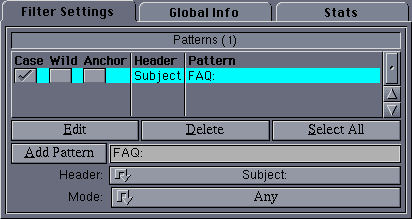

|
User Interface
|
The user interface for this filter looks like this:

A set of patterns can be added to the pattern list. For each pattern, the
following options may be set:
- Case - Setting this option makes the search case sensitive.
Otherwise it is case insensitive. Case sensitive matches are slightly
faster than case insensitive matches, but once a single case insensitive
match has been specified, the overhead has been payed and other case
insensitive matches are as cheap as case sensitive.
- Wild - If set, the pattern match may contain AmigaOS
wildcards. Otherwise, the pattern is a fixed string. Wildcard matching
is much slower than fixed string matching and should only be used where
a fixed string cannot be used.
- Anchor - If set, the indicated pattern must match the entire
header field exactly. Otherwise, it must only be contained in the
header field. For example, if the subject field is
Yessiree Bob, a pattern of ree would match only if
Anchor is not set. This applies to wildcard matches as well:
with Anchor unset, s*e would match. With Anchor set,
*s*bo* would match but s*bo would not.
- Header - This controls the article header against which the
match takes place.
- Pattern - This is a fixed string or pattern which is matched
against the indicated header field from articles.
The following controls are available:
- Edit - Edits a specific pattern. Individual patterns may be
given expiration times in the same manner as
selection filters
may.
- Delete - Deletes the selected patterns.
- Select All - Selects all patterns in the list.
- Add Pattern - Adds a new pattern to the list.
- Mode - Switches the mode between Any, in which the
filter will match an article if any listed pattern matches, and
All, in which the filter will only match an article if all listed
patterns match.
It is faster to add multiple patterns to a single HeaderMatch filter than
it is to use multiple HeaderMatch filters.
Back to Top
|